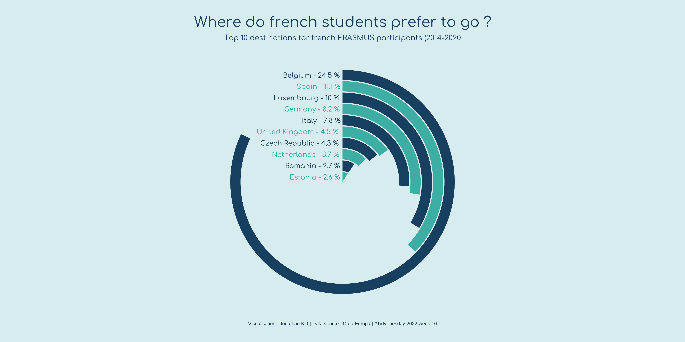

Customize every detail#
Load data#
One of the greatest things of R data visualization is its community.
There are many open-source projects going on that revolve around getting
started and improving our data viz skills. One of my favorite projects
is tidytuesday, a
challenge consisting of sharing toy datasets, plotting them and posting
them together with the corresponding code on twitter with the hashtag
#tidytuesday.
They even share videos on
how to reproduce plots made by others just by looking at their final
plot! I think this is a great resource to get inspired, getting to know
new possibilities, and training. There are people that have made this a
weekly ritual! I recommend you to follow this twitter
bot to check out people’s ideas.
One of my favorite R plotters is
Cedric Scherer, who has become a
guru of data visualization. Check out his webpage!
Here, we will use the toy dataset from 2022/03/08 on EU student mobility, describing the movements of students throughout the ERASMUS program.
require(tidyverse)
require(ggpubr)
dat_url = "https://raw.githubusercontent.com/rfordatascience/tidytuesday/master/data/2022/2022-03-08/erasmus.csv"
dat = read_csv(dat_url)
dat %>% head(1) %>% t()
## [,1]
## project_reference "2014-1-AT02-KA347-000139"
## academic_year "2014-2015"
## mobility_start_month "2014-11"
## mobility_end_month "2014-11"
## mobility_duration "1"
## activity_mob "National youth meetings"
## field_of_education "? Unknown ?"
## participant_nationality "AT"
## education_level "??? - ? Unknown ?"
## participant_gender "Female"
## participant_profile "Learner"
## special_needs "No"
## fewer_opportunities "Yes"
## group_leader "No"
## participant_age "13"
## sending_country_code "AT"
## sending_city "Dornbirn"
## sending_organization "bOJA - Bundesweites Netzwerk Offene Jugendarbeit"
## sending_organisation_erasmus_code "-"
## receiving_country_code "AT"
## receiving_city "Dornbirn"
## receiving_organization "bOJA - Bundesweites Netzwerk Offene Jugendarbeit"
## receiving_organisation_erasmus_code "-"
## participants "2"
Explore the data using the functions introduced.#
Freestyle time! Try out the functions from ggpubr that we introduced
earlier to get some answers from this dataset (e.g. what is the most
common connection?).
# mobility troughout years and months by gender
plt = dat %>%
mutate(month=gsub(".*-","", mobility_start_month)) %>%
count(academic_year, month, participant_gender) %>%
ggbarplot(x="month", y="n", fill="participant_gender", palette="simpsons",
facet.by="academic_year", position=position_dodge(0.5), color=NA) +
labs(x="Month", y="Count", fill="")
plt

ggplot2 in depth: @KittJonathan’s version#
To exemplify how projects like tidytuesday can help us learning new
ways of plotting in R, I have copy-pasted
@KittJonathan’s version of the
challenge:
KittJonathan/tidytuesday.
In this github page you’ll find many more cool visualizations!
NOTE: you’ll need to install several extra packages to be able to run it:
showtext: edit fonts more easily in R graphs.countrycode: get country code names.
erasmus = dat
require(showtext)
require(countrycode)
# Load fonts ----
font_add_google(name = "Comfortaa", family = "Comfortaa")
showtext_auto()
# Data wrangling ----
country_codes <- codelist %>%
select(iso2c, country_name = country.name.en)
d1 <- erasmus %>%
filter(participant_nationality == "FR", # keep data for french students
receiving_country_code != "FR") %>% # keep mobilities abroad
select(receiving_country_code, participants) %>% # remove unwanted columns
left_join(country_codes, by = c("receiving_country_code" = "iso2c")) %>% # add sending country name
mutate(country_name = case_when(receiving_country_code == "EL" ~ "Greece", # add missing country names
receiving_country_code == "UK" ~ "United Kingdom",
receiving_country_code == "CZ" ~ "Czech Republic",
TRUE ~ country_name)) %>%
group_by(country_name) %>% # group data by country name
mutate(total = sum(participants)) %>% # count total number of participants for each receiving country
filter(row_number() == 1) %>% # keep 1 row by receiving country
arrange(desc(total)) %>% # arrange data by descending order
ungroup() %>% # ungroup data
mutate(percent = 100 * total / sum(total)) %>% # calculate ratio
mutate(country_name = factor(country_name, levels = rev(country_name))) %>% # set levels %>%
head(10) # keep top 10 destinations
# Create plot ----
p <- ggplot(data = d1,
aes(x = country_name, y = total, fill = country_name)) +
geom_bar(width = 0.9, stat = "identity", show.legend = FALSE) +
scale_fill_manual(values = rep(c("#3caea3", "#173f5f"), 5)) +
coord_polar(theta = "y", start = 0) +
xlab("") +
ylab("") +
labs(caption = "Visualisation : Jonathan Kitt | Data source : Data.Europa | #TidyTuesday 2022 week 10") +
geom_text(aes(x = country_name, y = 0, label = paste0(country_name, " - ", round(percent, digits = 1), " %")),
hjust = 1.05, family = "Comfortaa", size = 10, colour = rep(c("#173f5f", "#3caea3"), 5)) +
ggtitle(label = "Where do french students prefer to go ?",
subtitle = "Top 10 destinations for french ERASMUS participants (2014-2020") +
ylim(c(0, 250)) +
theme_void() +
theme(plot.background = element_rect(fill = "#d6ecef", colour = "#d6ecef"),
panel.background = element_rect(fill = "#d6ecef", colour = "#d6ecef"),
plot.title = element_text(family = "Comfortaa", size = 60, colour = "#173f5f", hjust = 0.5,
margin = margin(t = 20)),
plot.subtitle = element_text(family = "Comfortaa", size = 30, colour = "#173f5f", hjust = 0.5),
plot.caption = element_text(colour = "#173f5f", size = 20, hjust = 0.5,
margin = margin(b = 20)))
ggsave("images/2022_03_08_erasmus.png", p, dpi = 320, width = 12, height = 6)

References#
Session Info#
sessionInfo()
## R version 4.3.1 (2023-06-16)
## Platform: x86_64-pc-linux-gnu (64-bit)
## Running under: Ubuntu 18.04.6 LTS
##
## Matrix products: default
## BLAS: /usr/lib/x86_64-linux-gnu/openblas/libblas.so.3
## LAPACK: /usr/lib/x86_64-linux-gnu/libopenblasp-r0.2.20.so; LAPACK version 3.7.1
##
## locale:
## [1] LC_CTYPE=en_US.UTF-8 LC_NUMERIC=C
## [3] LC_TIME=es_ES.UTF-8 LC_COLLATE=en_US.UTF-8
## [5] LC_MONETARY=es_ES.UTF-8 LC_MESSAGES=en_US.UTF-8
## [7] LC_PAPER=es_ES.UTF-8 LC_NAME=C
## [9] LC_ADDRESS=C LC_TELEPHONE=C
## [11] LC_MEASUREMENT=es_ES.UTF-8 LC_IDENTIFICATION=C
##
## time zone: Europe/Madrid
## tzcode source: system (glibc)
##
## attached base packages:
## [1] stats graphics grDevices utils datasets methods base
##
## other attached packages:
## [1] countrycode_1.5.0 showtext_0.9-7 showtextdb_3.0 sysfonts_0.8.9
## [5] ggpubr_0.4.0 lubridate_1.9.2 forcats_1.0.0 stringr_1.5.1
## [9] dplyr_1.1.1 purrr_0.3.4 readr_2.1.5 tidyr_1.2.1
## [13] tibble_3.2.1 ggplot2_3.5.0 tidyverse_2.0.0
##
## loaded via a namespace (and not attached):
## [1] gtable_0.3.4 xfun_0.42 rstatix_0.7.2 tzdb_0.3.0
## [5] vctrs_0.6.1 tools_4.3.1 generics_0.1.3 curl_5.2.1
## [9] parallel_4.3.1 fansi_1.0.3 highr_0.10 pkgconfig_2.0.3
## [13] lifecycle_1.0.4 compiler_4.3.1 farver_2.1.1 textshaping_0.3.7
## [17] munsell_0.5.0 ggsci_3.0.1 carData_3.0-5 htmltools_0.5.7
## [21] yaml_2.3.8 pillar_1.9.0 car_3.1-2 crayon_1.5.2
## [25] abind_1.4-5 tidyselect_1.2.1 digest_0.6.29 stringi_1.7.8
## [29] labeling_0.4.3 fastmap_1.1.1 grid_4.3.1 colorspace_2.0-3
## [33] cli_3.4.0 magrittr_2.0.3 utf8_1.2.4 broom_1.0.5
## [37] withr_3.0.0 scales_1.3.0 backports_1.4.1 bit64_4.0.5
## [41] timechange_0.3.0 rmarkdown_2.26 bit_4.0.5 ggsignif_0.6.4
## [45] ragg_1.3.0 hms_1.1.3 evaluate_0.23 knitr_1.45
## [49] rlang_1.1.0 glue_1.6.2 vroom_1.6.5 jsonlite_1.8.0
## [53] R6_2.5.1 systemfonts_1.0.6